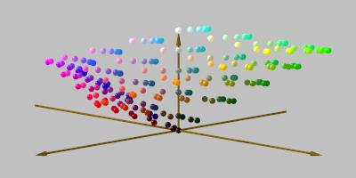

Graphical workstations and high-end personal computers are generally equiped with 24 bit truecolour displays - pixels can independently be set to any desired colour. 8 bits (256 levels) of red, green, and blue are available giving 16.7 million displayable colours. This is enough to eliminate most banding except for large, slowly varying dark areas, or when gamma correction is done by lookup table. Higher quality systems use 10 or 12 bits per pixel, which is enough to eliminate visible banding from all areas of the RGB colour space. Such systems are capable of displaying multiple high quality images.
16 bit displays are also typically used in a truecolour mode. This gives slightly worse results than indexed mode with single images containing 256 colours or less, but vastly better results with multiple images. A fine compromise between the somewhat inadequate 8 bit displays and the luxury of 24, 30 or 36 bit displays, they are now common on current PCs and Macs.
With an 8 bit indexed display, each pixel holds an index into a table of colour cells. There can be at most 256 distinct colours on screen at once, although these colours are not fixed and can be set to any desired colour. This system saves on expensive screen memory and is fine for non graphics-intensive tasks such as displaying single images. It starts to struggle when multiple images are to be displayed concurrently, a common situation for a Web browser. 8 bit displays are common on current X terminals and on older computers.
Systems with insufficient colours to display multiple arbitrary images have to allocate a small number of colours, which are then used to approximately represent the needed colours. This process is termed quantisation. A number of strategies have been developed for this; each has it's merits in certain situations, but none is universally suitable. Dithering, or trading spatial resolution for an increase in the apparent number of colours, can be used to mask the effect of the colour shortage. A poor choice of dithering algorithm can cause objectionable graininess or spotting on an image.
The simplest strategy is to start allocating colours with the first inline image and continue until you run out; then map all remaining colours to the nearest of those previously allocated. This works well when there is only a single inline image, or multiple images with few colours (such as hand-drawn icons), or when there are a number of images with similar colours such as several greyscale images.
This strategy falls down when:
Symptoms of this scheme breaking down are severe and objectionable colour casts on those images which loaded last. Early versions of NCSA Mosaic for X [1] employed this approach. The latest versions appear to be using some sort of adaptive palette management, optimised for those inline images which are currently visible, although this has problems with rapid scrolling.
In an attempt to prevent the problems just described, this method allocates a fixed range of colour cells in advance, and then maps all colours of all images to the nearest allocated colour. The same colour map is used for every HTML page.
In effect, it treats part of the 256 element lookup table as a truecolour display. With an even (in RGB space) allocation, colours from each inline images are speedily mapped to palette colours by multiplication and masking. The problem with this approach is that coverage of the device colour space is necessarily sparse. Six levels of each of red, green and blue (the maximum that can be used) requires 216 un-allocated colour cells.
Seen in CIE LUV colour space, some clumping of the allocated colours is evident in Figure 7. The necessarily sparse sprinkling through the colour gamut is clearly seen.

Figure 7: A 6x6x6 colour cube without gamma correction.
When other concurrent applications are also utilising the colour map, it frequently happens that 216 un-allocated cells are not available. The cube must be contracted down to a 5x5x5 cube (125 colours) or even a sparse 4x4x4 (64 colours) cube shown in Figure 8. Huge gaps can clearly be seen. Dark greens, for example, will show severe specking as the nearest colours, dithered together to approximate the desired hue, will be very dissimilar.
Fig 8: A 4x4x4 colour cube without gamma correction.
A colour palette allocated by Netscape 1.1N for X [16] is shown in Figure 9. A 6x6x6 cube has been allocated in this instance. The cells used by Netscape start with the four greys at the end of the third row.
Fig 9: Sample colour palette used by Netscape 1.1N for X.
There are two changes here. Firstly, the number of shades of green has been increased, to fill in the large perceptual range from black to green and from green to white; secondly the colours have been gamma corrected before being allocated (this assumes the underlying platform does not provide any hardware gamma correction, which is frequently the case). The effect, sen in Figure 10, is to move all the colours up the lightness axis. Compare this with Figure 7.
Fig 10: A 4x8x4 colour cuboid with gamma correction.
This plot shows a more even colour distribution, although with a slight lack of the darker colours. In practice, ambient lighting, glare, electron scattering and similar factors increase the lightness of the darkest visible colour, making this less noticeable.
Because of the different interval between adjacent green intensities (1/7th of the range) compared to red and blue (1/3rd the range), at no point within this cuboid is there a colour with equal red, green and blue values (apart from black and white). Thus, there are no greys.
The human eye is particularly sensitive to small changes in grey colours; steps in intensity, or deviations in hue from a pure grey. So as it stands the cuboid in would give especially bad display of greyscale images. The addition of a 16-element greyscale ramp to the scheme in Figure 11 attends to this shortfall.
Fig 11: A 4x8x4 colour cuboid plus 16-element grey ramp, with
gamma correction.
This sort of scheme is used by current versions of Arena [17] (0.96s and 0.97g) as the typical colourmap in Figure 12 shows. The cells used by Arena start with the four greys at the end of the third row and finish at the end of the third last row. Notice that the grey ramp is allocated first. In conditions of severe colour shortage, at least the grey ramp will have been allocated and Arena proceeds to convert all colour inline images to greyscale, preserving much of the graphical information and providing a pleasing apearance.
Fig 12: Sample colour palette used by Arena 0.97g.
It would be possible to allocate a range of colours chosen to be evenly spaced in CIE LUV space, to minimise objectionable spotting when images are dithered. There would be no simple relationship between the image colours and the allocated colours (as there is with a cuboid scheme) so the image would have to be quantised to the new palette. Quantisation is a slightly more time-consuming process than simple truncation or masking, and would make a browser feel slightly more sluggish.
Quantising to a known fixed palette can be done as the image streams in. Image formats which include popularity-sorted suggested palettes, such as PNG, can also be quantised as they stream in. If the palette is not fixed, and the image provides no hints, quantisation cannot proceed until all the images have been loaded.
Another possible improvement would be to re-quantise all the inline images to an optimal adaptive palette, after they have all been loaded and displayed. This might be presented to the user as an optimise this page option, or a user agent might take advantage of idle CPU time while the user is reading and scrolling, to perform the quantisation. The visual effect would be similar to the sharpening observed with interlaced GIF and PNG and progressive JPEG. This would require storage of the un-quantised images, which many user agents already do as a local cacheing optimisation
Some images with a limited number of colours, such as hand drawn icons with large areas of flat colour, do not necessarily require good colour fidelity. The speckling introduced by trying to simulate the desired colour may be more objectionable than a change in hue. Smart user agents might detect such images - perhaps ones with 32 or less colours - and disable their dithering on a case by case basis.
Moving from an 8 bit indexed scheme to a 16 bit true colour scheme results in a marked improvement in colour fidelity. Figure 13 shows a typical scheme with 5 bits for red and blue, 6 bits for green. (Note that this implies that a pure grey ramp is not produced, only an approximation, though the deviations are small.) The full range of the colour gamut is densely occupied by the 65 thousand colour points in this diagram, even though the size of each coloured sphere has been reduced to a third of that used in the other diagrams.
Fig 13: A 32x64x32 colour cuboid, without gamma correction.
User agents that use fixed colour allocation and support binary transparency may have problems if their background colour cannot be exactly represented.
Implementation of full transparency, or binary transparency with background textures, requires large numbers of colours even if the original image contains few colours.
Resampling (resizing) a limited colour image by any method other than pixel replication will increase the number of colours needed for the resized image.
User agents forced to use displays with inadequate colours cannot really display arbitrary multiple graphics with any sort of fidelity, regardless of how evenly spaced the colours are. Whilst some improvement can be made by allocating a perceptually even set of colours, this is counterbalanced by slower image display as all images are quantised. Thus, attempting to allocate a small fixed palette which is perceptually even is probably not worth the effort unless the underlying platform has a powerful CPU.
In conditions of profound colour shortage, presenting all images to greyscale preserves the most detail and looks far better than attempting to quantise to 27 or less colours. Ensuring that greyscale data can be adequately represented at all times is also a sound policy.
The increasing availability of inexpensive truecolour displays should ease (and in time, eliminate) these problems. Truecolour displays are the prerequisite for further advances in accurate image reproduction.
{kind=link}
{kind=link}
{kind=link}
{kind=link}
{kind=link}